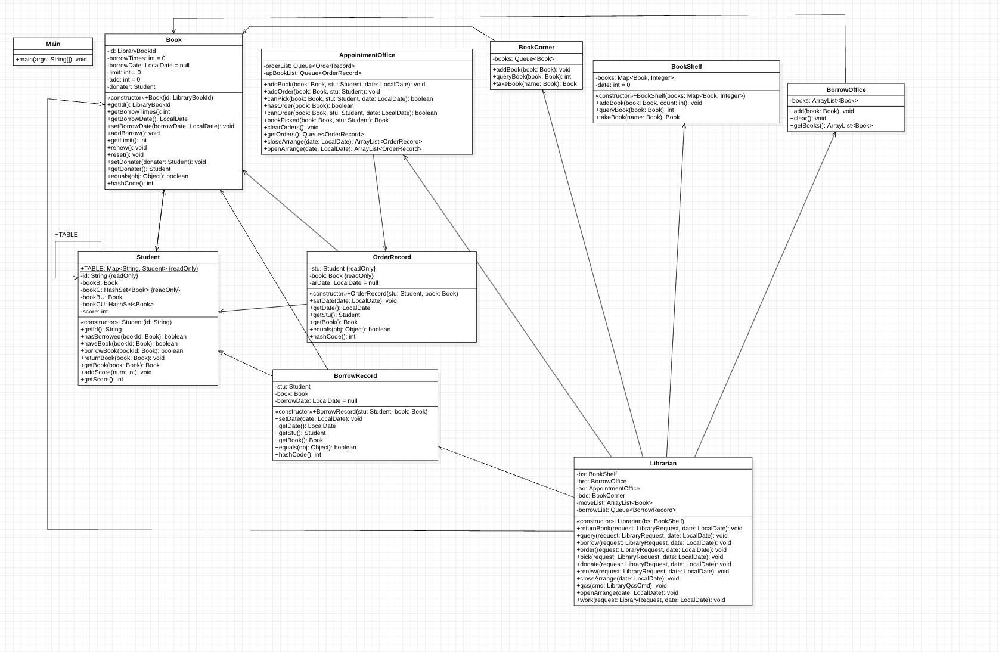

OO第四单元总结暨课程总结
写在前面
这是RooKie_Z对于OO Unit4和课程总体的总结博客
正向建模与开发
先简单介绍一下 正向建模与开发 的定义
正向建模与开发是一种根据给定的需求创建或制作应用程序的方法。正向建模与开发也被称为翻新和回收。正向建模与开发需要高水平的技能，它需要更多的时间来构建或开发应用程序。正向建模与开发是一种创建高层模型或设计的技术，以增加复杂性和低层信息。因此，这种工程在不同的软件和数据库过程中有不同的原则。正向建模与开发应用了所有的软件工程过程，包括软件开发生命周期（SDLC），以重新创建现有的应用程序。它是为了满足用户的新需求而进行重构的。
本单元的主题是
UML，正向建模与开发自然是最重要的一环，我个人也是按照课程组的指导，每次作业先做好建模设计再写代码。具体步骤如下：
- 通读指导书，记录需求重点和细节，并针对边界情况，各种功能编写各种样例
- 依据样例，整理项目逻辑，记录各个类的协作关系(类似于顺序图的要求)
- 依据整理的逻辑进行设计，画出类图草图和协作图草图
- 编写代码
- 使用
StarUml软件参照画uml图
其实前几步在其他几个单元的作业中我也会做，毕竟在完全不做设计的情况下写代码是很难的。但是我认为在设计阶段就画仔细的
uml 图其实不太方便，因为
StarUml细节比较多，要用鼠标点来点去，会分散设计阶段的注意力，但用纸和笔来画草图就很方便，而且还可以自己加各种提示在图中。所以我每次都是先画草图，再在全部写完以后用
StarUml画出最终的 uml 图。
放上一张
Unit1的设计图，也算是有始有终了🥳：

架构设计和UML模型设计之间的追踪关系
本单元架构： 
在这几次的作业中，为了做到高内聚，低耦合，我根据指导书的要求对于相应的对象都建了类，让他们各司其职。但是随着需求的增多以及复杂度要求更高，对于低耦合的实现就造成了很大的困难，尤其在
OrderRecord和
BorrowRecord两个类呈现出较大的耦合性。对于一致性方面，流程图以及状态图的实现都较简单，因此一致性较好。
架构设计思维的演进
其实我感觉第一单元是架构设计最复杂的单元，因为表达式十分抽象，如果没有
training和实验，我甚至都不知道怎么设计各个类，导致架构设计的难度很高，所以我的架构设计能力基本是在第一单元中养成的。
我设计架构以及写代码的核心思想就是追求简单，怎么简单怎么来。因为逻辑简单的代码更好把控，更不容易出
bug，即使真的出问题也很好定位。 我在 1，2
单元中都进行了轻微重构，重构的方向都是把原来复杂一些的代码化简，即使这可能会牺牲一些性能或是架构的美观性。
其实“面向对象性”和架构简单性的矛盾是我一直在思考的内容。以第四单元举例，如果想秉承模块化等思想，是应该把每个功能处拆成单个类来写的，而不是在图书馆类里面写多个组合函数。但更多的类、更多的包装会导致更多的函数嵌套调用或是对象的嵌套使用，这其实会增加代码逻辑上的复杂度，也可能会增加出问题时
debug
的难度，排查一个问题时可能需要跳转多个函数，且多个函数之间都可能出现问题。这个问题我一直没有一个清晰的答案，在几个单元的作业中，我认为代码逻辑简单更重要，但这种想法也不一定对。这个问题最终的答案我可能也要到后续的代码编写实践中获取了。
测试思维的演进
其实在这四个单元中，我的测试思路没有什么变化，都是黑白箱结合的方式。一方面通过阅读代码梳理逻辑等方式进行白箱测试，另一方面编写评测机或者数据生成器进行测试或对拍。 这种测试方法的优点是效果尚可，只要生成的数据强度过硬就能测出代码的 bug，同时结合一点编写针对性debug样例的技巧，能够快速地定位bug，便于后续debug。
具体而言：
- 第一单元，借用递归下降的优势，测试数据的生成，和程序的编写，都可以一同使用，采用了大量的随机数据与少数特殊数据因子相结合的构建方法。
- 第二单元，DPO😭狠狠的膜了。
- 第三单元，主要是随机数据，同时考虑查询数据的大量性，保证基本正确性的前提下，构建大量查询边界数据来测试
TLE。另外，还有Junit测试。 - 第四单元，鉴于数据有极大的限制，前期边界条件的模糊，在没有保证自己评测会不会正确的前提下，后续参考张鑫和高鹏飞同学的评测机并加以魔改来完成评测。
课程收获
入宝山不要空手而归
其实在上 OO 课之前，我就已经听说过其大名了，知道 OO 很苦很累但是能学到不少东西。但实际体验的收获还是超乎我的想象。我竟然还在一个星期内学会了多线程，这种高效率的学习是我非常喜欢的。在这之前，我也自学过各种东西，但网上的教程总是学起来效率很低，且缺乏在指导下的大规模高效实践，导致学出来只能用来吹没法实干。但 OO 课程却完全解决了这个问题，OO 课通过高压的训练和适当的引导让我很快的发现解决问题所需的重点知识并掌握了它们，在 OO 课程的学习中，我还接触了很多面向对象和 Java 以外的有用的东西，比如 JML 与契约式编程或是非常使用的 UML还有通过python来搭建评测机。这些知识也让我受益匪浅。 总而言之，通过 OO 课程的学习，我见识并掌握了很多各种各样的知识，练就了各种各样的能力，收获满满。 最后，很感谢老师们和助教们长久以来的付出和对我的帮助，也注 OO 课程越办越好。
还是那句古训，无论艰难困苦，最后结果成功也好，失败也罢，莫以成败论英雄，入宝山切莫空手而归！！！
OO第四单元总结暨课程总结